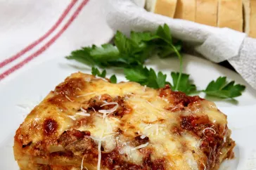

Meat lasagna
This is the famous meat lasagna is for the meat lovers!
Make this at home and your family and friends will want seconds or even thirds!
Ingredients
- 1 lb of sweet sausage
- 3/4 lb of lean ground beef
- 1/2 cup of minced onion
- 2 cloves of garlic, crushed
- Tomato products
- 1 (28 oz) can of crushed tomatoes
- 2 (6.5 oz) cans of tomato sauce
- 2 (6 oz) cans of tomato paste
- 1/2 cup of water
- 2 tablespoons of sugar
- Seasoning
- 4 tablespoons of chopped fresh parsley
- 1 1/2 teaspoons dried basil leaves
- 1 1/2 teaspoons of salt
- 1 teaspoon Italian seasoning
- 1/2 teaspoon of fennel seeds
- 1/4 teaspoon of ground black pepper
- 12 lasagna noodles
- Cheeses
- 3/4 cup of grated Parmesan cheese
- 3/4 lb of mozzarella cheese, sliced
- 16 oz of ricotta cheese
- 1 egg
Steps
- Gather all the ingredients
- Cook sausage, ground beef, onion, and garlic
in a pot over medium heat until browned.
- Add and stir to the pot of cooked ground beef the crushed tomatoes,
tomato sauce, tomato paste, and water. Season with sugar, 2 tablespoons
of parsley, basil, 1 teaspoon of salt, Italian seasoning,
fennel seeds, and pepper. Simmer (covered) for 1 1/2 hours,
stirring occasionally.
- Bring a large pot of lightly salted water to a boil. Cook lasagna noodles
in boiling water for 8-10 minutes. Drain noodles, and rinse with cold water.
- In a mixing bowl, combine ricotta cheese with egg, remaining 2 tablespoons
of parsley, and 1/2 teaspoon of salt.
- Preheat the oven to 375 degrees F (190 degrees C)
- To assemble, spread 1 1/2 cups of meat sauce in the bottom of a 9x13 inch
baking dish. Arrange 6 noodles lengthwise over meat sauce. Spread with 1/2 of
the ricotta cheese mixture. Top with 1/3 of the mozzarella cheese slices.
Spoon 1 1/2 cups of meat sauce over mozzarella, and sprinkle with 1/4 cup
Parmesan cheese.
- Repeat layers, and top with remaining mozzarella and Parmesan cheese.
Cover with foil: to prevent sticking, either spray foil with cooking spray or
make sure the foil does not touch the cheese.
- Bake in the preheated oven for 25 minutes. Remove the foil and bake for
an additional 25 minutes.